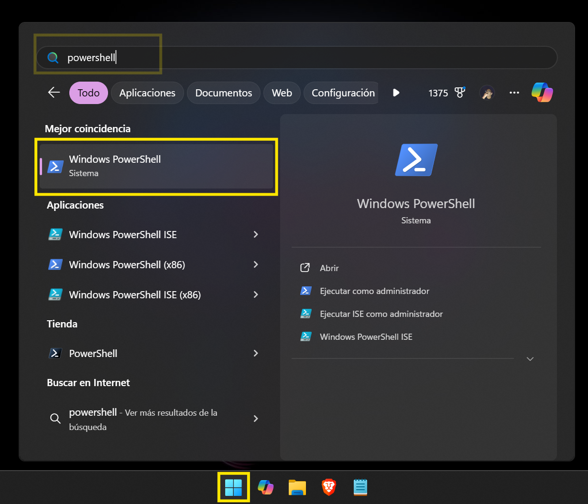

Guía de seguridad para equipos
Cómo revisar la configuración de tu equipo Windows para proteger la información.
Método 1: Revisión visual de carpetas compartidas
Este método te permite ver rápidamente qué carpetas son visibles en la red. No necesitas permisos especiales para solo mirar.
Opción A: A través del explorador de archivos
-
1. Abre el "Explorador de archivos". Es el ícono de la carpeta amarilla en la barra de tareas.
-
2. Haz clic en la barra de direcciones de la parte superior, borra lo que esté escrito y teclea
\\localhost. Después, presiona la tecla "Enter".
-
3. La ventana te mostrará todas las carpetas que tu equipo está compartiendo en la red.
Opción B: Con la herramienta de "Administración de equipos"
Esta opción te da una vista más técnica y completa.
-
1. Mueve el ratón sobre el ícono de Inicio de Windows (la ventana en la esquina inferior izquierda) y haz clic derecho.

-
2. En el menú que aparece, busca y haz clic izquierdo en la opción "Administración de equipos".
-
3. En la nueva ventana, busca en el panel izquierdo la opción "Carpetas compartidas" y haz doble clic para desplegarla. Luego, haz un solo clic en "Recursos compartidos".
-
4. En el panel central verás la lista completa de carpetas compartidas. Si quieres dejar de compartir una y tienes los permisos, haz clic derecho sobre ella y selecciona "Dejar de compartir".
Método 2: Revisión por consola (CMD o PowerShell)
Si prefieres usar comandos o alguna de las herramientas visuales no funciona, puedes usar la consola. Ambas opciones te mostrarán la misma información.
Opción A: Usando el Símbolo del sistema (CMD)
-
1. Presiona la tecla de Windows, escribe
cmdy selecciona "Símbolo del sistema" de la lista.
-
2. En la ventana negra que aparece, escribe el comando
net sharey presiona "Enter". -
3. Aparecerá una lista con los nombres de los recursos compartidos y su ubicación.
Opción B: Usando PowerShell
-
1. Presiona la tecla de Windows, escribe
powershelly selecciona "Windows PowerShell" de la lista. -
2. En la ventana azul, escribe el mismo comando:
net sharey presiona "Enter".
¿Cómo desactivar el uso compartido?
Si identificaste una carpeta que no debería ser pública o quieres asegurarte de que tu equipo no sea visible en la red, sigue estos pasos.
¡Atención! Se requieren permisos
Para realizar estos cambios necesitas autorización y, probablemente, permisos de administrador. Si las opciones aparecen en gris o bloqueadas, no podrás continuar.
- Abre el "Panel de control" (puedes buscarlo en el menú de Inicio).
- Haz clic en "Redes e Internet" y luego en "Centro de redes y recursos compartidos".
- En el menú de la izquierda, selecciona "Cambiar configuración de uso compartido avanzado".
- Verás perfiles (Privado, Público). Despliega el que esté activo y selecciona "Desactivar la detección de redes" y "Desactivar el uso compartido de archivos e impresoras".
- Haz clic en "Guardar cambios". Es posible que te pida una contraseña de administrador.